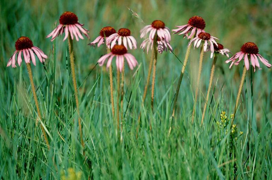
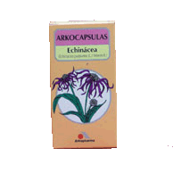
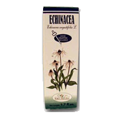
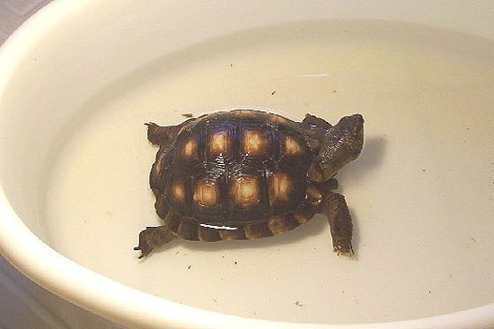

|
EFECTOS
DE LA EQUIN�CEA PURP�REA (Echinacea purpurea)
Klara Tuset, 2005

Echinacea purpurea. Foto
http://www.plante.as.ro/
Recientemente se ha empezado a emplear la equin�cea como un modo de
estimular las defensas naturales de las tortugas de tierra o como
ayuda a la hora de combatir enfermedades infecciosas. Aunque es pronto
para saber si este m�todo es realmente efectivo en estos animales, lo
cierto es que es una pr�ctica que est� comenzando a extenderse y no
muestra efectos secundarios da�inos.
La
equin�cea es un arbusto procedente del centro y suroeste de Am�rica de
la familia Asteraceae. De los tres compuestos elaborados con equin�cea
que existen en el mercado farmacol�gico espa�ol reconocidos en el
�ltimo Vademecum M�dico (V-I Vademecum Internacional, Medicom S.A. Ed
m�dicas, 2003), el m�s recomendable es �Echinacea Arkocapsulas �� de
los laboratorios �Arkochim Espa�a�. Las otras dos marcas contienen
otro tipo de compuestos adem�s de la equin�cea y se emplean para
tratar infecciones urinarias, no respiratorias. Tambi�n se pueden
emplear extractos l�quidos de equin�cea que encontraremos en
farmacias, siendo �Equinacea Soria Natural �� el de uso m�s extendido.
Hay
que tener en cuenta que los compuestos farmacol�gicos de equin�cea que
encontraremos en el mercado contienen ra�ces de esta planta, no las
partes a�reas. Hay que mostrarse cauteloso con los compuestos de venta
a peso en las herborister�as, ya pueden contener cualquiera de las
nueve especies diferentes de equin�cea (pallida, angustifolia...) y
suele venderse mezclada con ginseng o pr�polis para potenciar su
efecto.
|

Echinacea
Arkocapsulas � |

Equinacea Soria
Natural � |
�C�mo act�a la equinacea?
La equin�cea aumenta la producci�n de los gl�bulos blancos (las
defensas del organismo) y, al mismo tiempo, tiene propiedades
analg�sicas (reduce la sensaci�n de dolor o malestar), antis�pticas
(desinfecta) y antinflamatorias.
La
equin�cea es muy rica en �Equinacina�, un polisac�rido soluble en
agua, que es uno de los m�s efectivos estimuladores de las defensas
del organismo, ya que refuerza el tejido celular aumentando la
protecci�n y la resistencia de las c�lulas a los ataques de las
bacterias y las invasiones pat�genas. Adem�s, estimula la regeneraci�n
de los tejidos celulares que ya han sido da�ados.
Otra propiedad, es que estimula la aparici�n y la acci�n de los
fagocitos macr�fagos, que fagocitan y digieren (�se comen�) a los
agentes pat�genos.
Por
�ltimo, estos polisac�ridos impiden la actuaci�n de una enzima llamada
hialuronidasa. Esta enzima resulta altamente da�ina, ya que comienza a
funcionar cuando hay una infecci�n pat�gena e inhibe el �cido
hialur�nico de las c�lulas. Este �cido, por decirlo de alg�n modo,
act�a como si fuera un �cemento� que mantiene a la c�lula unida.
Cuando la hialuronidasa entra en funcionamiento hace desaparecer este
�cido y la c�lula deja de estar cerrada y aislada, por lo que se
facilita que entren ella los pat�genos invasores.
La
equin�cea tambi�n contiene un �cido cafe�nico llamado Equinac�sido. La
cafe�na es un estimulante del sistema respiratorio y, este �cido en
particular, es muy efectivo en la erradicaci�n de virus, bacterias,
hongos y protozoos. Tambi�n estimula la regeneraci�n de los tejidos
celulares mediante una acci�n antirradicales libres y estimulando la
producci�n de col�geno (una especie de reparador celular).
Otro de sus componentes es un alcaloide llamado �Pyrolizidina�, que es
un anest�sico y reduce la sensaci�n de malestar y dolor de la tortuga,
aunque su presencia en la ra�z de la equin�cea es muy baja (su mayor
concentraci�n se encuentra en sus ramas).
Tratamiento y dosificaci�n
El tratamiento con equin�cea sirve para aumentar las defensas del
organismo y prevenir una posible infecci�n, as� como para ayudar a
combatirla cuando ya se ha producido. Por ello, puede usarse de manera
preventiva o como tratamiento complementario ante enfermedades
infecciosas.
�
Administraci�n en agua del ba�o:
Si se opta por el extracto l�quido, se debe diluir doce gotas en un
cuarto de litro de agua templada (un vaso de agua convencional) y
utilizar esta mezcla como agua ba�o de la tortuga.

Administraci�n en agua del ba�o (A�da Rodr�guez)
�
Administraci�n por v�a oral:
Si se utilizan las c�psulas (cada c�psula contiene 250 mg de polvo de
ra�z de Echinacea Purp�rea), hay que tener en cuenta que la
dosis recomendada como tratamiento preventivo es de 1,5 mg de polvo de
equin�cea por cada 100 gramos de peso de la tortuga y se administra de
la siguiente manera:
1� Cada c�psula contiene 250 mg de equin�cea que se diluyen en 12,5 ml
de agua muy caliente (se hace una infusi�n y se deja reposar para que
enfr�e).
2� Cada 0,05 ml de esta disoluci�n contiene 1 mg de polvo de equin�cea,
por lo que se debe adaptar la dosis de acuerdo al peso del animal y
puede administrarse por v�a oral con una jeringa o mezclado con la
comida.
3� El resto se puede conservar en nevera para las tomas siguientes,
aunque es recomendable agitar bien la mezcla para evitar que el
extracto se pose en el fondo de la disoluci�n.
Tanto en la administraci�n de la equin�cea en el agua del ba�o como
por v�a oral, debe ofrecerse una �nica dosis diaria durante siete/diez
d�as seguidos para que llegue a ser efectivo y no repetirse la
operaci�n m�s de una vez al mes, ya que no es recomendable hiper-estimular
el sistema inmunol�gico.
|